Make sure the Suppliers are setup with e-mail Address in the Who’s Who (P0111) under Row Exit Email/Internet:
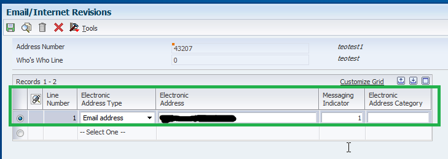
Use a Payment Instrument set up to call a certain version of the R04572. Verify this in Work With Payment Control Groups (P04571), Row Exit Controls:
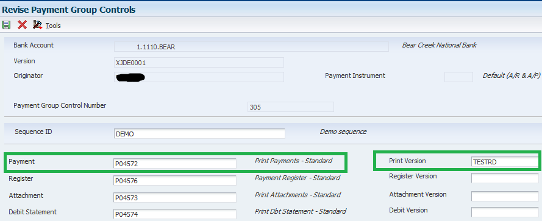
2. Add a blank RTF Template to BI Publisher Object Repository (P95600)
Create the blank RTF file and make sure to actually Open and Save the file before uploading it to the BI Publisher Object Repository. In the BI Publisher Object Repository (P95600) press Add then fill the information in the Update BI Publisher Object Repository screen:

Press OK, and then select the blank RTF file in the file selection box:
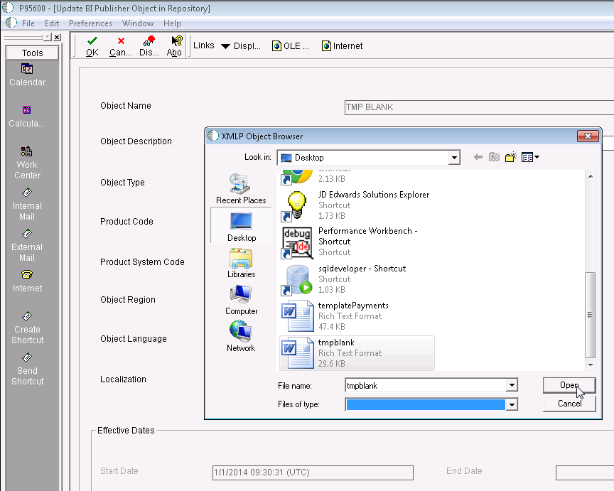
Enter a Start Date under Effective Dates and press OK to upload the Template.
3. Create a Report Definition using the blank RTF Template from step 2 in order to produce the XML Source of the R04572 report
In Report Definitions (P95620) press Add then complete the UBE, version and Template for the RD:
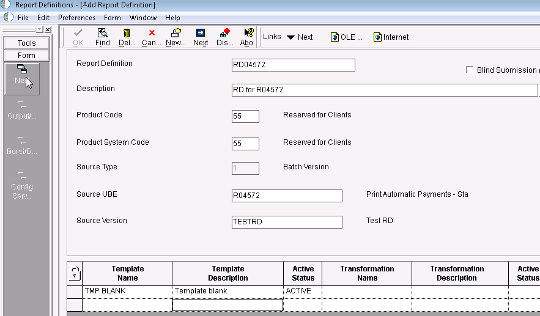
Take Form Exit Next and set up Output Type and Language options:

Press Next again and at this time do not set any Bursting/Delivery options:
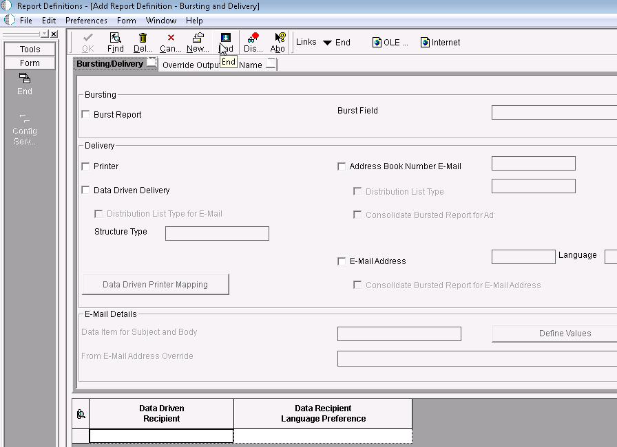
4. Associate the Report Definition from step 3 with the version of the R04572 report version from step 1
Go to Work with Batch Versions, Select the R04572 version from step 1 and take Row Exit Version Detail (Make sure the version is checked out):
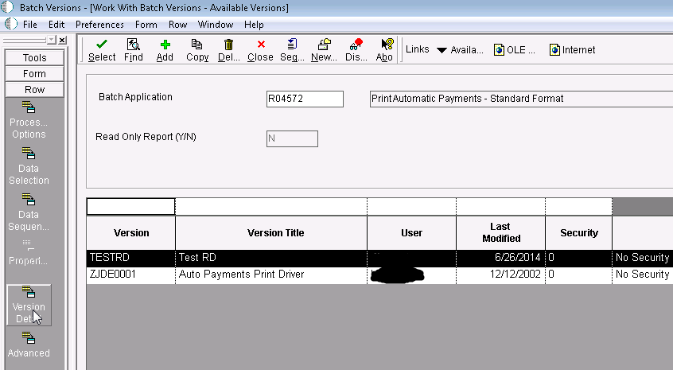
In the next screen take Form Exit Report Definition:
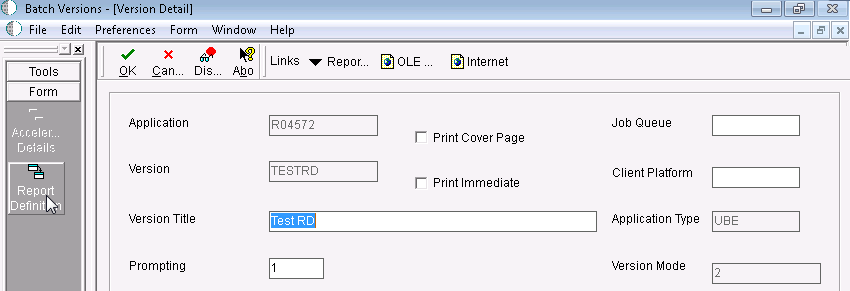
In the Report Definition screen associate the version with the Report Definition from step 3 then save the changes:

After this step, whenever the version of the report is called, the system calls the Report Definition.
5. Write the payment group (P04571) from step 1 and save the XML Source for the R04572
Write the payment control group from step 1.
Go to Submitted Jobs select the R04572 job and take Row Exit View RD Source and then save the file when prompted:
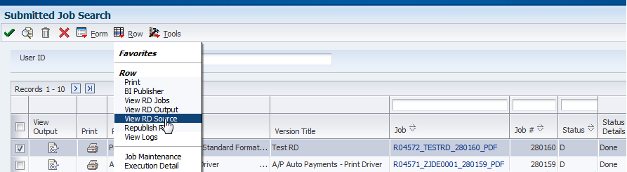

The XML Source for the R04572 report contains the information from the R04572 in XML format instead of the regular PDF format.
Opened in Internet Explorer it looks as follows. Notice the XML Elements corresponding to the content of the report:
Notice that sections that are repeated in the PDF are repeated in the XML file. For instance the Driver_Section_S14 which includes payment information or Stub _Detail_S16 which includes Pay Items information.
All these XML Elements can later be rearranged and formatted using an RTF Template. Even more complex processing can be done with an XSL template.
To view the RD Output in Submitted Jobs, select the R04572 job and take Row Exit View RD Output. It will be a blank PDF file because we did not add any Fields in the RTF Template.
6. Using the XML Source and the Oracle BI Publisher Template Builder create a new RTF Template file to display payment information
To produce a meaningful RD Output file, a different BI Publisher Template is needed. We will create another RTF Template file using a Microsoft Word Plug-In called Oracle BI Publisher Template Builder. This Plug-In comes with the Oracle BI Publisher Desktop program.
To determine the exact version of BI Publisher Desktop that you need to use and how to download it.
Open a new RTF document with Microsoft Word. After installing BI Publisher Desktop, additional menu options are available in the Microsoft Word menu and use those options to create the RTF document:
Depending on the exact BI Publisher Desktop version the BI Publisher menu, the buttons may look slightly different, but the same steps should be followed. BI Publisher Template Builder version 11.1.1.5.0 was used in this document.
First press Sample XML and select the XML Source produced by R04572:
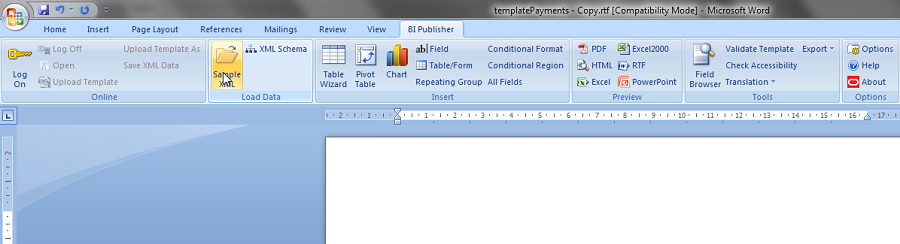
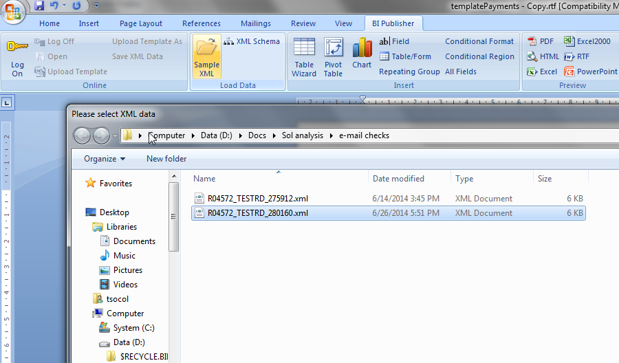

After this step, the BI Publisher Template Builder is able to show Fields in a hierarchical tree with the XML Elements from the R04572 XML Source. The Field menu option displays a selection form from which Fields can be added in the RTF document at the cursor position:
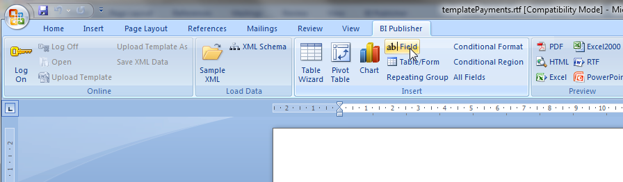
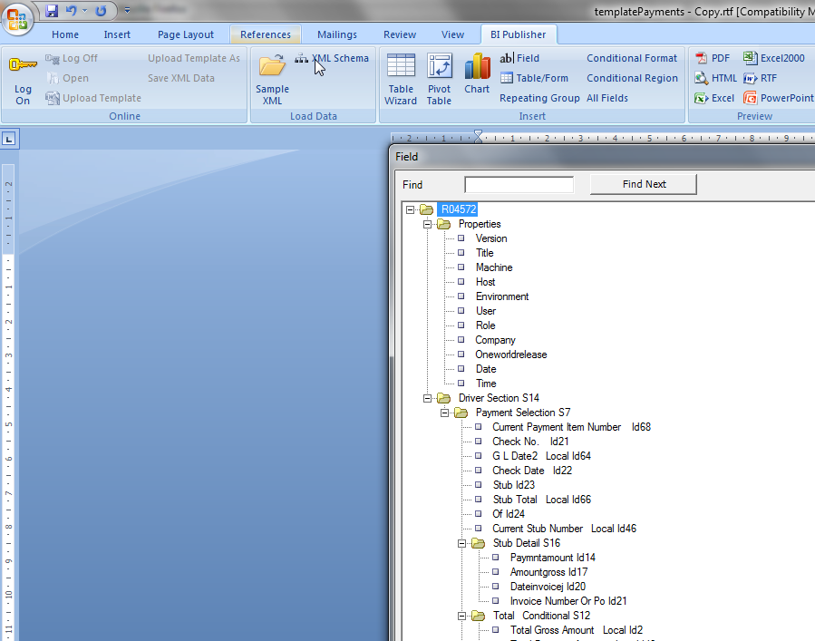
Use Repeating Group menu option for loop like statements:
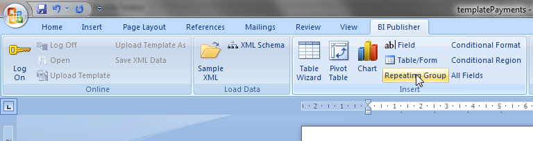
Define the loop by Field:
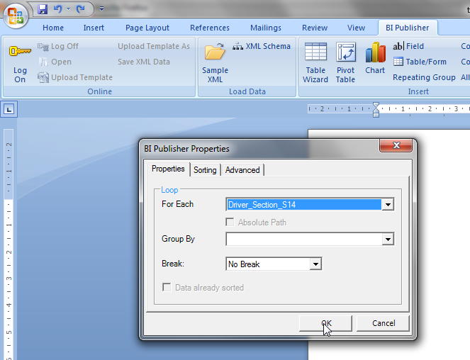
Then add the fields and/or text information that you want displayed within each loop enclosed between “for-each” and “end” statements:
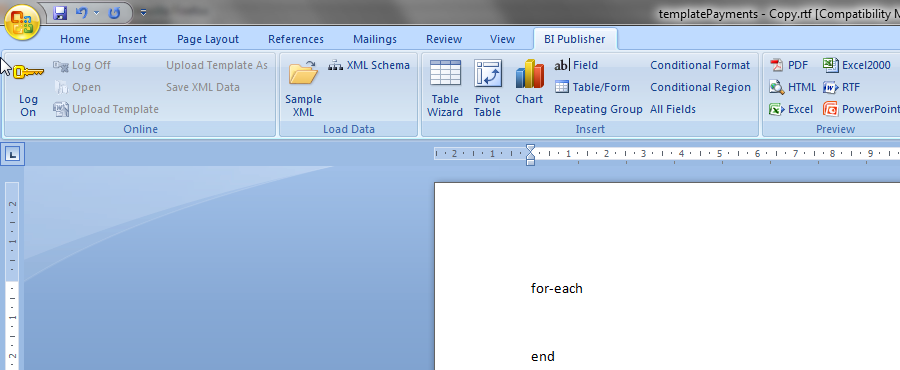
Nested loops can be created.
Any formatting done via the Microsoft Word formatting menus is applied to the Report Definition output.
Create the following RTF to generate meaningful content:

The first loop is for Driver_Section_S14 which includes payment information and the nested loop is for Stub _Detail_S16 to print Pay Item information.
To view the actual output for merging the XML Source with the RTF Template use the PDF menu option:

Resulting PDF:

Note:
This is only a simple example created as a demo. One can create different templates to produce more complex output including images and formatting to match their specific requirements.
- If you need to add MICR fonts in the template see document: Adding a Font to be Used with Embedded Publisher for EnterpriseOne
- For more details on how to use the BI Publisher Template Builder, check the Help for the Plug-In under Options sub menu.
- For BI Publisher Templates information check the Oracle BI Publisher Core Components Guide for your version of Embedded BI Publisher.
7. Add the Template from step 6 to the BI Publisher Object Repository
Go to BI Publisher Object Repository (P95600) and Add the Template:

Select the RTF file created in step 6:

Select a Start Date and then press OK to save the RTF Template.
8. Modify the Report Definition from step 2 to use the Template just created and set up bursting and delivery options
Go to Report Definitions (P96520) and Select the Report Definition from step 3 and click the Visual Assist for the Template Name and select the Template from step 7:
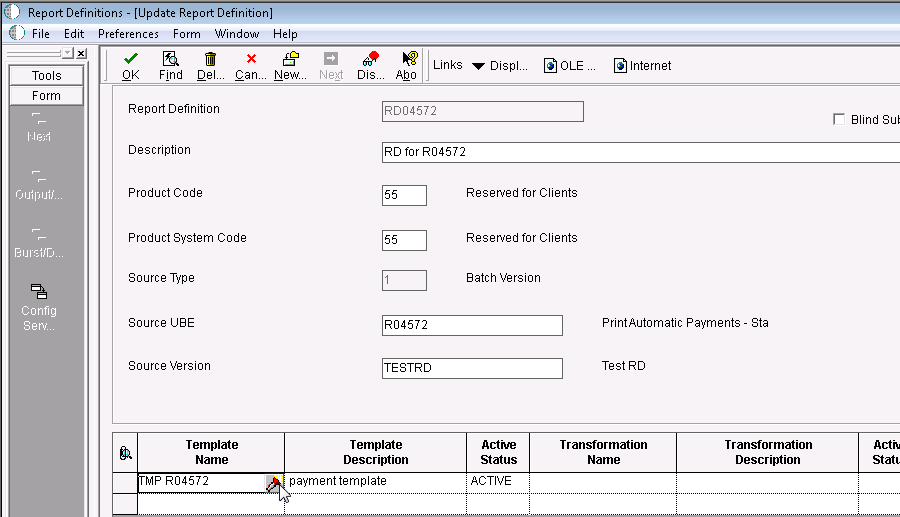
Press OK and in the Output/Languages screen; do not modify anything.
9. In the Burst/Delivery screen set up the e-mailing options
Press OK again in Output/Languages screen and in the Burst/Delivery setup Burst/Delivery options.
Examine the XML Output from step 5 and identify the level break section to burst by and the address book tags as follows:
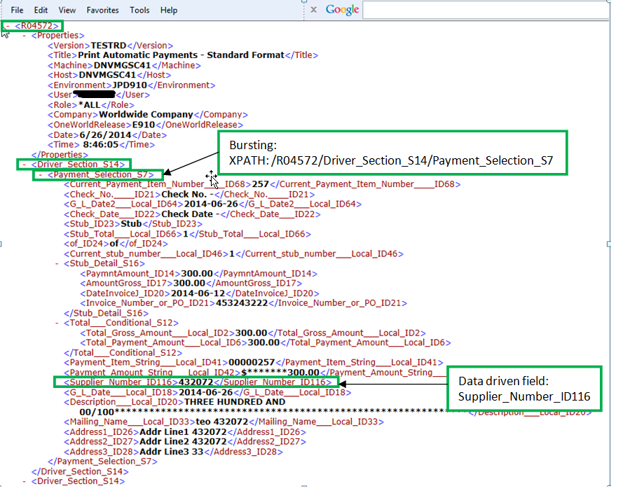
Set up the Burst field with the XPath to the Address Book field and the Data Driven Recipient (Address Book to whom to e-mail the output) then press OK to save:

10. Reset the Payment group and Write again (P04571). Notice it sent e-mails to each supplier with the pages of R04572 that contained the specific payments to each supplier
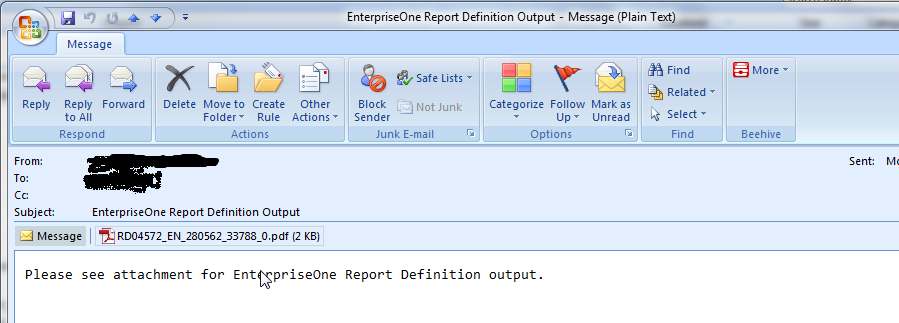

Additional Information
See more on how to setup custom Subject and Body for Data Driven e-mails in:
How to Setup Dynamic Subject and Body for E-mail Delivery?
See more on setting Data Driven Delivery in:
xample of Using Data Driven E-Mail with Embedded BI Publisher for EnterpriseOne